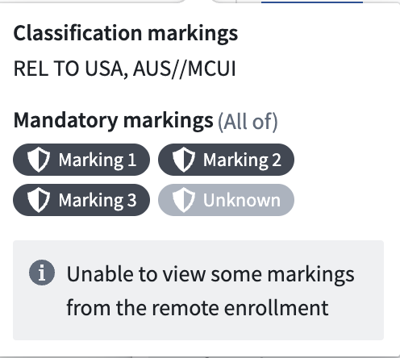

This page details frequently asked questions about Peer Manager.
If you are unable to see the markings on a peer connection, then you may not have view access to the markings themselves. When this is the case, Peer Manager displays the Unknown marking icon. While data secured across Foundry with a marking you do not have access to will be hidden from your view, you can view the connection the data will travel across in Peer Manager but not its underlying data.

In many cases, this is caused by markings peered from a remote enrollment. When a remote enrollment adds markings to a peer connection, peering automatically maps those markings to local markings. If no matching local marking exists, then peering creates a new local marking with the same name.
While the act of peering creates new markings, peering does not grant local users access to the marking. Only enrollment administrators may govern who has access to markings on a given enrollment. To resolve this, contact an enrollment administrator who can view all markings and request that they provide you view access to the new markings.